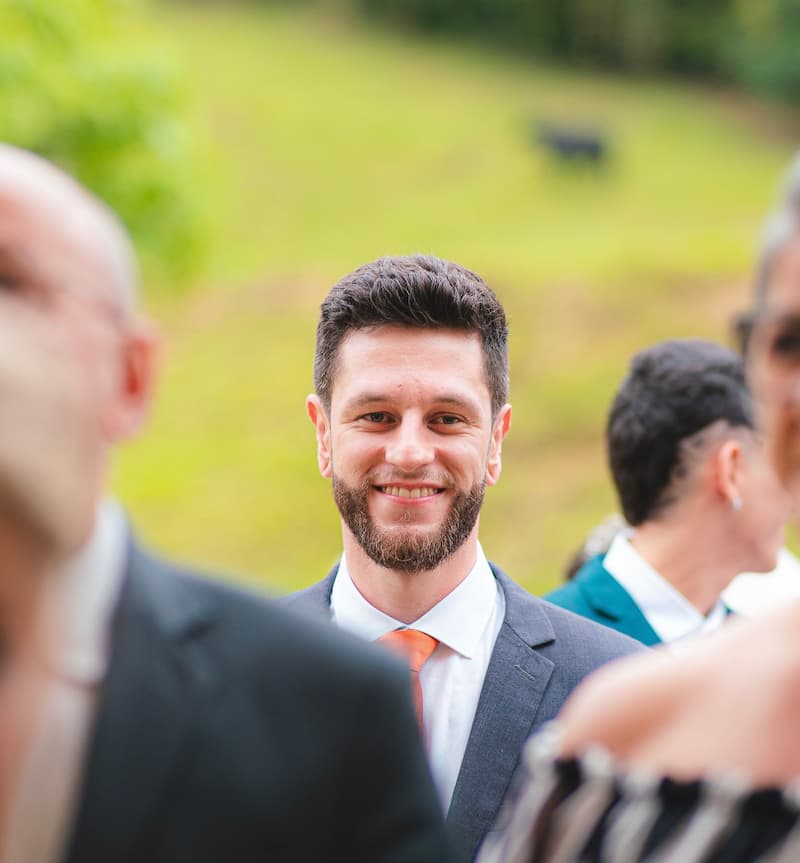

Lucas Darela Cardoso | WDD 130
Hello! My name is Lucas. I’m 29 years old and I’m from Santa Catarina, Brazil. I enjoy learning new things, exploring technology, and connecting with people from different cultures. I’m passionate about web development and currently studying to enhance my skills in creating modern, responsive websites and applications. I’m always looking for opportunities to grow, collaborate, and apply what I learn in real-world projects. In my free time, I like discovering innovative tools, improving my coding skills, and staying up to date with the latest tech trends.